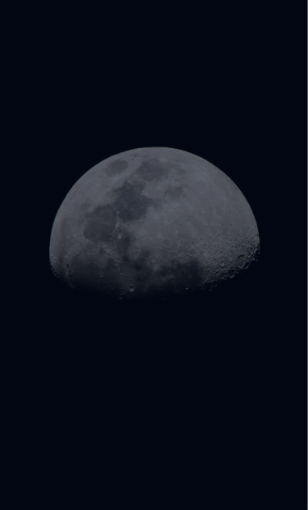

Articles

Read 5 minutes
Image of the moon with a telescope
NASA wants to use a crater on the back of the moon to mount a giant telescope
NASA announced that it has selected the idea of installing a radio telescope on a lunar crater to receive funding as part of its NASA's Innovative Advanced Concepts (NIAC) program. Through this program, they invest in technological ideas from NASA, industry and academic researchers across the country at an early stage.
The project was proposed by the NASA Jet Propulsion Laboratory. In order to deploy the telescope, it will be necessary to send robotics to the far side of the moon. This technique will be able to stretch the network over the crater as a platform for the device. The goal of the mission will be to search for terrestrial planets outside the solar system.
Rovers will have to pull a wire mesh with a diameter of about one km inside a crater 3-5 km in size. The receiver will be located in the center. “The LCRT radio telescope with a diameter of 1 kilometer will be the largest full-aperture radio telescope in the solar system,” the project description says.
Lunar crater
Among the advantages of locating the telescope on the far side of the moon, it is noted that the satellite “acts as a physical screen that isolates the telescope of the lunar surface from radio interference / interference from ground sources, the ionosphere, satellites from Earth’s orbit and the radio noise of the Sun.”
The lunar telescope project is one of 23 concepts that has received most of the total $ 7 million investment through the NIAC. Another laboratory researcher, Vyacheslav Turyshev, will receive a grant of $ 2 million to further improve his concepts and related technologies within two years. He talked about the possibility of using a solar gravitational lens to improve the view of planets orbiting other stars known as exoplanets.
NASA noted that these projects will basically require decades of technological development, and so far they are not official missions of the agency.
The full list of grant recipients is available at:
https://www.nasa.gov/directorates/spacetech/niac/2020_Phase_I_Phase_II/